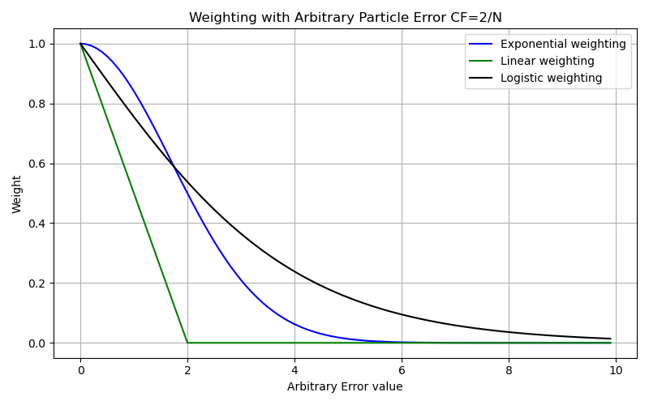

Weighting Library
This library contains the weighting functions used in the particle filter. There are three different functions that can be used. All weighting functions are 1 dimensional.
The weighting function transforms the error function result into normalized weights. Sum normalization is used to ensure weight distributions sum to 1.
{kind=link}

Linear
The linear weighting function determines weights under the assumption that at zero error there is 100% probability of resampling.
Exponential
Logistic
Function Definitions
- Weighting.calculate_linear_weights(scores, CF=2)[source]
Calculate linear weights based on scores. Use correction factor to adjust tail length.
- Parameters:
scores (
numpy.ndarray) – One dimensional list of error values generated from the error function.CF (
float, optional) – Correction factor, use to adjust the lenght of the tail distribution. The default is 2.
- Returns:
weights – Weights of all particle probabilities.
- Return type:
numpy.ndarray
- Weighting.calculate_exp_weights(scores, CF=1)[source]
Calculate weights using exponential decay of scores. Use correction factor to adjust tail length.
- Parameters:
scores (
numpy.ndarray) – One dimensional list of error values generated from the error function.CF (
float, optional) – Correction factor, use to adjust the lenght of the tail distribution. The default is 1 and adjusts the following equation (CF*2/# of particles).
- Returns:
weights – Weights of all particle probabilities.
- Return type:
numpy.ndarray
- Weighting.calculate_logistic_weights(scores, CF=1)[source]
Calculate Gaussian weights based on scores
- Parameters:
scores (
numpy.ndarray) – One dimensional list of error values generated from the error function.CF (
float, optional) – Correction factor, use to adjust the lenght of the tail distribution. The default is 1 and adjusts the following equation (CF*2/# of particles).
- Returns:
weights – Weights of all particle probabilities.
- Return type:
numpy.ndarray